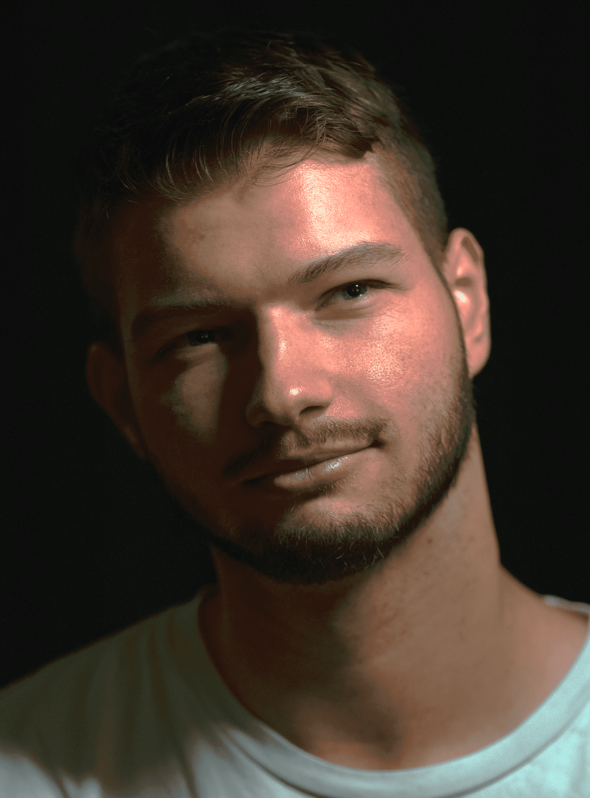
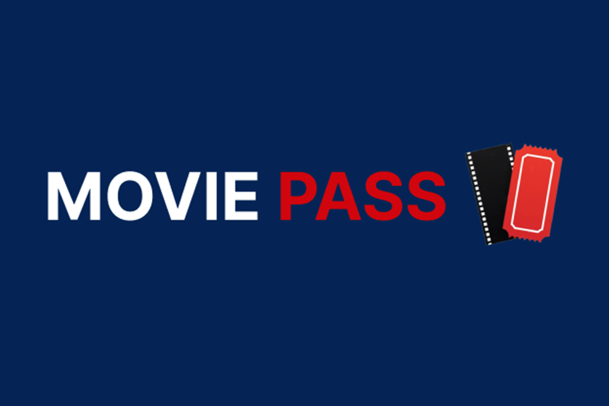
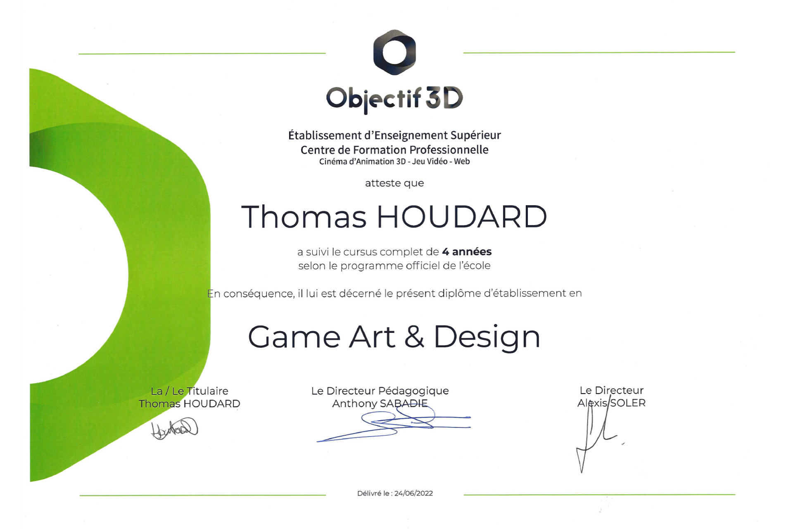
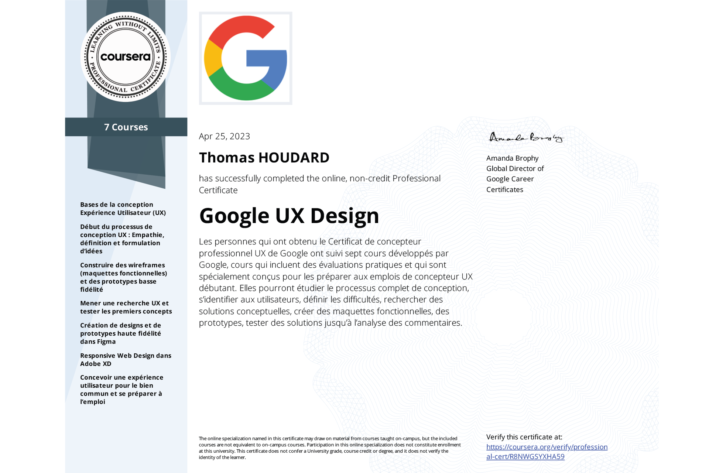
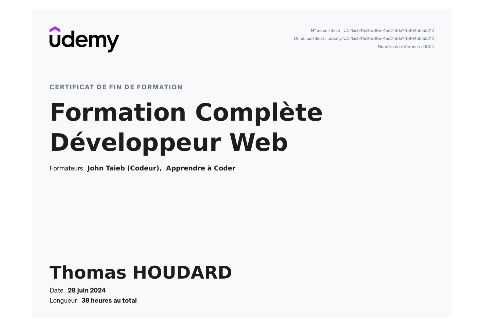

UI/UX & PRODUCT DESIGNER · FRONT-END
Je conçois des expériences digitales claires, intuitives et réalisables.
Projets récents

MOVIE PASS
Rôle : UI & UX Designer
UI/UX · Refonte d'un parcours de réservation cinéma, focus expérience utilisateur.
Voir le projet →
IRONCAT
Rôle : UI/UX Designer & Web Developer
Expérience internationale · UI/UX design & développement web chez un studio à Vilnius.
Voir l'expérience → Freelance · UX/UI & WordPressSEA RECOVERY
Rôle : UI/UX Designer
Freelance · Refonte UX/UI et intégration WordPress d'une expérience digitale premium.
Voir le projet →CV Vidéo
Découvrez mon profil en moins de 90 secondes.
Compétences Techniques
Concevoir des expériences utiles
- User Research
- User Flows
- Information Architecture
- Wireframing
- Prototyping
- Usability Testing
Transformer les parcours en interfaces
- UI Design
- Responsive Design
- Interaction Design
- Design Systems
- Accessibility
Comprendre la réalité technique
- HTML · CSS · JavaScript
- Git
- WordPress · Shopify
- Workflows assistés par l'IA
Compétences Relationnelles
Communication claire, écoute active et co-construction avec les équipes produit et tech.
Exploration structurée, prototypes rapides et recherche de solutions réalistes.
Design, front-end, documentation, accompagnement produit sur la durée.
Veille UX, performance, accessibilité et nouvelles pratiques de développement.
Langues
Français (Natif)
Rédaction & communication professionnelle.

Anglais (B2)
Tech, documentation & réunions internationales.

Outils & Logiciels


 Photoshop · Illustrator · InDesign · Premiere Pro · XD
Photoshop · Illustrator · InDesign · Premiere Pro · XD


Passions
Sports
Discipline, énergie, équilibre au quotidien.
Voyages
Ouverture, découverte & curiosité du monde.
Entrepreneuriat
Créer de la valeur utile et concrète.
Lecture
Apprentissage continu & réflexion.
Jeux vidéo
Game design, narration & expérience interactive.
Certifications


